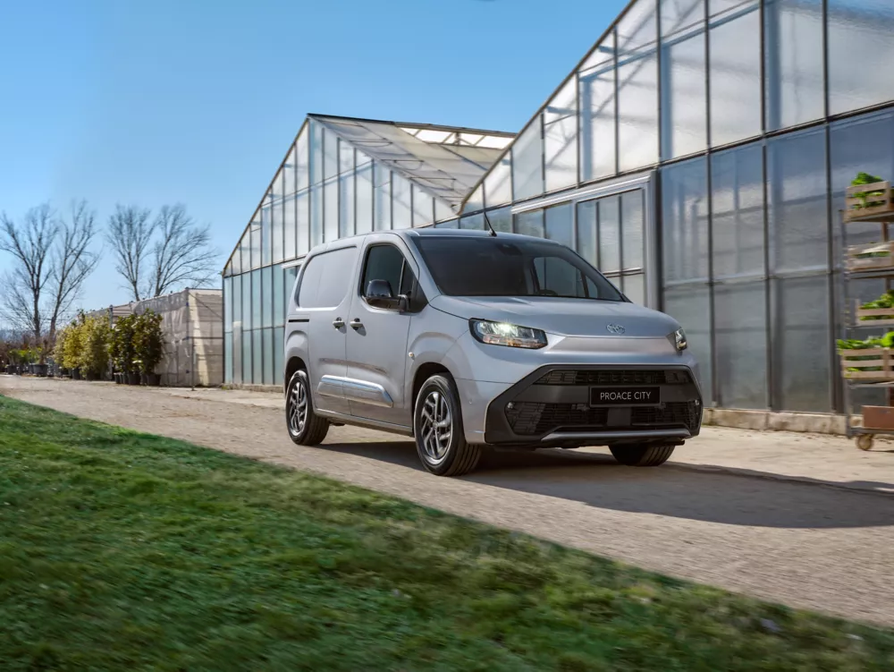

Gereedschap mee. Werkdag begonnen.
Van je eerste levering tot je laatste klant: kies een Toyota-bestelwagen vanuit het werk dat erin moet passen.

Je werk is de maatstaf.
De laadruimte moet kloppen. Je werkdag ook.
Je gereedschap moet mee. Je laadplek, parkeerplaats en klantenroute ook. Vergelijk een bestelwagen met je eigen materiaal en een gewone werkdag als maatstaf.
Uitvoering, laadvermogen en trekgewicht worden voor de gekozen wagen gecontroleerd. Een modelnaam alleen bewijst geen geschiktheid.
Van materiaal naar de juiste uitvoering.
- Je grootste materiaal, je gewone lading en het aantal zitplaatsen.
- De afstanden, dagelijkse stops en plekken waar je laadt of parkeert.
- De inrichting, bevestigingen en bestickering voor jouw werk.
- Je gewenste startdatum en de tijd voor eventuele ombouw.
Van gekozen wagen naar ingerichte werkwagen.
Bespreek met De Bruyn de afstemming van uitvoering, ombouw, bestickering en aflevering. Wat mogelijk is en wanneer, wordt voor jouw aanvraag bevestigd.
Ook de volgende wagen hoort bij het geheel.
Bekijk de wagen samen met de kosten, je andere voertuigen en het onderhoud. Zo beslis je niet over één stukje van je bedrijf.
Bekijk de zakelijke aanpak